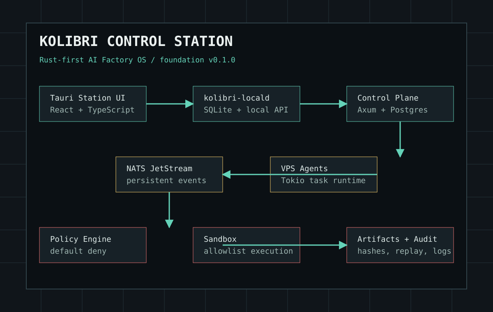

Tauri Station
UI не исполняет shell напрямую и общается с локальным daemon.
kolibriai.ru
Rust-first self-hosted AI Factory OS для управления VPS-кластером, агентами, задачами разработки, событиями, sandbox-исполнением, артефактами и аудитом.

UI не исполняет shell напрямую и общается с локальным daemon.
Axum/Tokio foundation для nodes, agents, tasks, events и audit.
Единая event-шина для task.created, task.assigned и audit flow.
Default deny, allowlist-команды, redaction секретов и PTY-gate.
Foundation собирается локально одной цепочкой проверок.
make dev-up
make control-plane
make scheduler
make locald
make agent
make station
make testВ релиз входят Rust workspace, Tauri/React station, locald, control-plane skeleton, agent/scheduler foundation, infra, docs, CI gates и release manifest.